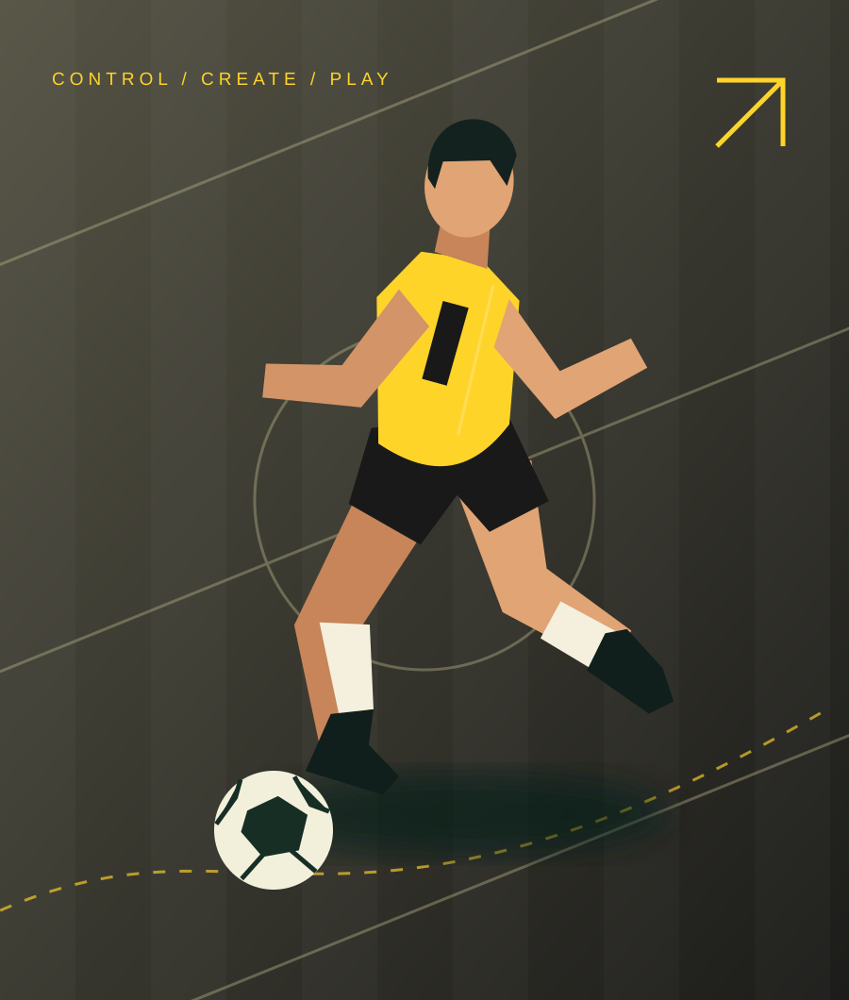

INDIVIDUAL FOCUS
Private training
Space to work on your goals, fine-tune technique, and develop at your own pace.
- Individual attention
- Focused technical practice
- Personal development goals
A LITTLE RHYTHM. A LOT OF FOOTBALL.
Find your touch. Trust your instincts. Bring a little more creativity to every game.
CLOSE CONTROL / CREATIVE PLAY / CONFIDENCE

01 / THE APPROACH
A space to experiment, get comfortable on the ball, and enjoy the process of getting better.
Our training approach takes inspiration from the creativity of Brazilian football: plenty of ball contact, quick decisions, and the freedom to try something new.
Build close control through purposeful ball work.
Explore movement, space, and decisions under pressure.
Bring new skills into game-like challenges.
02 / FIND YOUR FORMAT
Choose a training format to explore.
Availability and pricing to be confirmed.
INDIVIDUAL FOCUS
Space to work on your goals, fine-tune technique, and develop at your own pace.
SHARED ENERGY
Train alongside a few teammates, with room for individual feedback and shared challenges.
BUILD A RHYTHM
Make training part of your routine through a group programme built around skill and play.
THE NEXT MOVE STARTS WITH YOU
03 / GOOD TO KNOW
Private training offers individual focus. Small groups bring partner work and shared challenges. A group programme supports a regular training routine. The right fit depends on your goals and preferred learning environment.
Contact Paulo to discuss the right age and ability group for your player.
The venue, schedule, and session lengths will be published once the programme details are confirmed.
To ask about availability and pricing, prepare an enquiry below and send it to Paulo. Booking and payment are arranged directly with the coaching team.
04 / YOUR FIRST TOUCH
Tell us what you’re looking for.
Prepare an enquiry, then open it in your email app to send to Paulo@brazilianfootwork.com. Your details are not stored by this website.